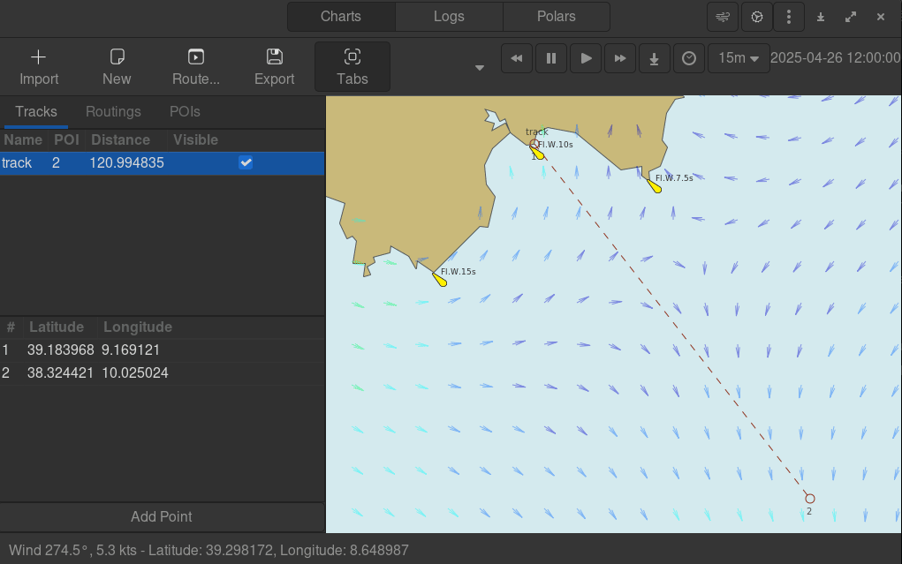

GWeatherRouting: Open-source sailing routing and navigation#
GWeatherRouting
Open-source sailing routing and navigation
GWeatherRouting is an open-source sailing routing and navigation software written using Python and Gtk4.

Contributions
Contributions and issue reports are very welcome at the GitHub repository.